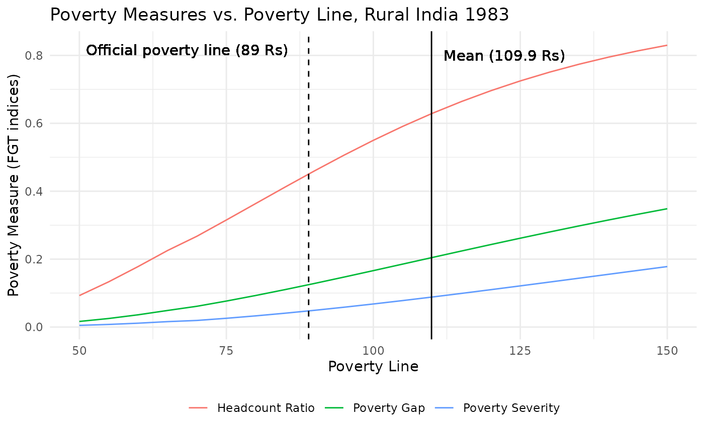
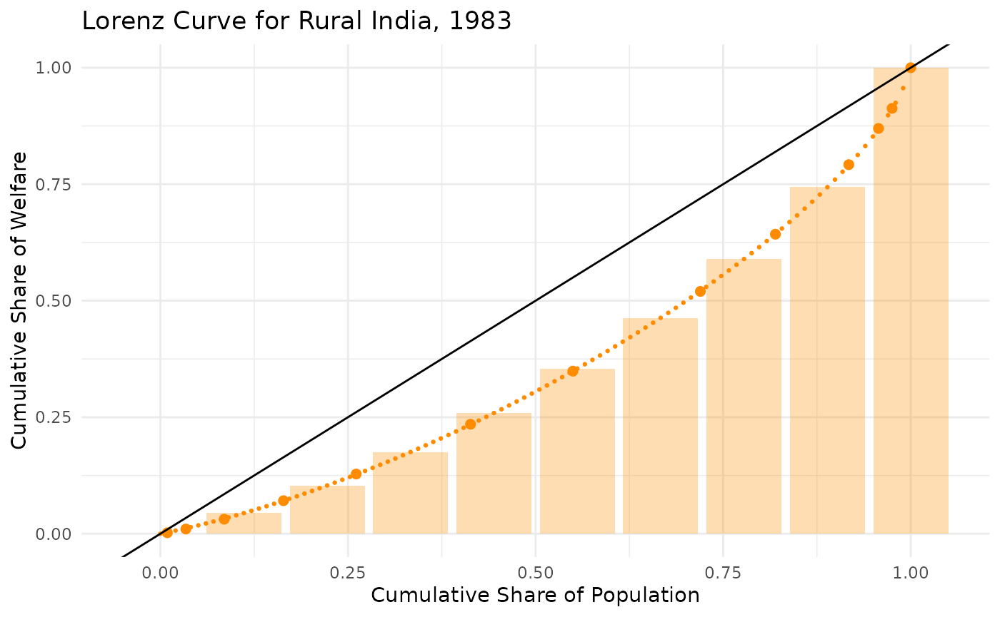

The get_gd() function allows users to interact with the
PIP API to retrieve grouped data statistics based on cumulative welfare
and population data. Depending on the chosen estimate
parameter, it can retrieve:
estimate = "stats").estimate = "lorenz").estimate = "params").Here are a few examples to get you started:
By default, get_gd() returns grouped statistics
(estimate = "stats") based on cumulative welfare
(cum_welfare) and population values
(cum_population), both expressed as percentages. The
default mean (requested_mean) and poverty line
(povline) are set to 1, so the user should specify the
known mean of the distribution, and the desired poverty line.
The data used in this example is from (Datt
(1998)). Among other consumption survey variables, The dataset lists
the cumulative welfare(L, for Lorenz) and population
values(p) for rural India in 1983, expressed in shares
(percentages). The mean of the distribution is 109.9 Rs (daily), and the
poverty line at the time was 89 Rs. Note that the cumulative welfare and
population values should be monotonically increasing and sum to 1 to be
valid. Additionally, the cumulative population values should always be
greater or equal to the corresponding welfare values.
datt_mean <- 109.9
datt_povline <- 89
str(datt_rural)
#> 'data.frame': 13 obs. of 6 variables:
#> $ monthly_pc_exp : chr "0 – 30" "30 – 40" "40 – 50" "50 – 60" ...
#> $ mean_monthly_pc_exp : num 24.4 35.8 45.4 55.1 64.9 ...
#> $ percentage_of_persons: num 0.92 2.47 5.11 7.9 9.69 ...
#> $ p : num 0.0092 0.0339 0.085 0.164 0.2609 ...
#> $ L : num 0.00204 0.01009 0.03118 0.0708 0.12805 ...
#> $ area : chr "rural" "rural" "rural" "rural" ...To retrieve basic grouped statistics, you need to provide cumulative welfare and population values along with the requested mean and poverty line.
get_gd(
cum_welfare = datt_rural$L,
cum_population = datt_rural$p,
estimate = "stats",
requested_mean = datt_mean,
povline = datt_povline
)
#> # A tibble: 1 × 20
#> poverty_line mean median headcount poverty_gap poverty_severity watts gini
#> <dbl> <dbl> <dbl> <dbl> <dbl> <dbl> <dbl> <dbl>
#> 1 89 110. 94.3 0.451 0.125 0.0476 0.165 0.289
#> # ℹ 12 more variables: mld <dbl>, polarization <dbl>, decile1 <dbl>,
#> # decile2 <dbl>, decile3 <dbl>, decile4 <dbl>, decile5 <dbl>, decile6 <dbl>,
#> # decile7 <dbl>, decile8 <dbl>, decile9 <dbl>, decile10 <dbl>popshare)
As an alternative, instead of the mean, you can provide the
population share (popshare), which will be assumed equal to
the poverty headcount ratio, and used to calculate the rest of the
statistics (and the poverty line itself):
get_gd(
cum_welfare = datt_rural$L,
cum_population = datt_rural$p,
estimate = "stats",
requested_mean = datt_mean,
popshare = 0.3
)
#> # A tibble: 1 × 20
#> poverty_line mean median headcount poverty_gap poverty_severity watts gini
#> <dbl> <dbl> <dbl> <dbl> <dbl> <dbl> <dbl> <dbl>
#> 1 73.4 110. 94.3 0.3 0.0716 0.0237 0.0913 0.289
#> # ℹ 12 more variables: mld <dbl>, polarization <dbl>, decile1 <dbl>,
#> # decile2 <dbl>, decile3 <dbl>, decile4 <dbl>, decile5 <dbl>, decile6 <dbl>,
#> # decile7 <dbl>, decile8 <dbl>, decile9 <dbl>, decile10 <dbl>To retrieve Lorenz curve data, you can specify
estimate = "lorenz" and provide the number of bins
(n_bins) to return (there is no default value for
n_bins). The Lorenz curve will be estimated with both the
Beta Lorenz and Quadratic Lorenz methodologies, then the best one will
be selected by default.
lorenz_100 <- get_gd(
cum_welfare = datt_rural$L,
cum_population = datt_rural$p,
estimate = "lorenz",
n_bins = 10
)
str(lorenz_100)
#> tibble [10 × 2] (S3: tbl_df/tbl/data.frame)
#> $ welfare: num [1:10] 0 0.0443 0.1036 0.1754 0.2589 ...
#> $ weight : num [1:10] 0 0.111 0.222 0.333 0.444 ...You can also specify the Lorenz curve methodology by setting the
lorenz parameter to either "lb" (Beta Lorenz)
or "lq" (Quadratic Lorenz).
get_gd(
cum_welfare = datt_rural$L,
cum_population = datt_rural$p,
estimate = "lorenz",
lorenz = "lb",
n_bins = 10
)
#> # A tibble: 10 × 2
#> welfare weight
#> <dbl> <dbl>
#> 1 0 0
#> 2 0.0432 0.111
#> 3 0.103 0.222
#> 4 0.174 0.333
#> 5 0.257 0.444
#> 6 0.353 0.556
#> 7 0.463 0.667
#> 8 0.592 0.778
#> 9 0.748 0.889
#> 10 1 1Finally, you can retrieve the regression parameters used for the
Lorenz curve estimation by setting estimate = "params". The
methods used, both the Beta Lorenz and the Quadratic Lorenz, are
described in detail in Datt (1998).
get_gd(
cum_welfare = datt_rural$L,
cum_population = datt_rural$p,
estimate = "params"
)
#> # A tibble: 2 × 16
#> lorenz A B C ymean sst sse r2 mse se_A se_B
#> <chr> <dbl> <dbl> <dbl> <dbl> <dbl> <dbl> <dbl> <dbl> <dbl> <dbl>
#> 1 lq 0.888 -1.45 0.202 0.122 0.0846 3.51e-6 1.000 3.90e-7 0.00676 0.0193
#> 2 lb 0.561 0.930 0.580 -2.50 11.0 3.25e-3 1.000 3.61e-4 0.0150 0.00554
#> # ℹ 5 more variables: se_C <dbl>, validity <lgl>, normality <lgl>,
#> # selected_for_dist <chr>, selected_for_pov <chr>The variable selected_for_dist shows the Lorenz curve
methodology selected by default when calculating the Lorenz curve data
points and the deciles. The variable selected_for_pov shows
the Lorenz curve methodology selected by default when calculating the
poverty and inequality statistics.
We now show three examples of how the get_gd() function
could be integrated in a workflow to analyze and visualize group
data.
datt_mean <- 109.9
datt_povline <- 89
# Define a sequence of poverty lines
poverty_lines <- seq(50, 150, by = 5)
# Initialize a data frame to store results
poverty_stats <- data.frame()
# Loop over poverty lines to compute poverty measures
for (pl in poverty_lines) {
stats <- get_gd(
cum_welfare = datt_rural$L,
cum_population = datt_rural$p,
estimate = "stats",
requested_mean = 109.9,
povline = pl
)
poverty_stats <- rbind(poverty_stats, data.frame(poverty_line = pl, headcount = stats$headcount, poverty_gap = stats$poverty_gap, poverty_severity = stats$poverty_severity))
}
# Plotting
ggplot(poverty_stats, aes(x = poverty_line)) +
geom_line(aes(y = headcount, color = "Headcount Ratio")) +
geom_line(aes(y = poverty_gap, color = "Poverty Gap")) +
geom_line(aes(y = poverty_severity, color = "Poverty Severity")) +
geom_vline(xintercept = datt_povline, linetype = "dashed", color = "black") +
geom_text(aes(x = datt_povline, y = 0.8, label = "Official poverty line (89 Rs)"), hjust = 1.1, vjust = 0) +
geom_vline(xintercept = datt_mean, color = "black") +
geom_text(aes(x = datt_mean, y = 0.8, label = "Mean (109.9 Rs)"), hjust = -.1) +
labs(
title = "Poverty Measures vs. Poverty Line, Rural India 1983",
x = "Poverty Line",
y = "Poverty Measure (FGT indices)",
color = "Poverty Measure"
) +
theme_minimal() +
theme(legend.position = "bottom",
legend.title = element_blank())
lorenz_points_lq <- get_gd(datt_rural$L, datt_rural$p, estimate = "lorenz", lorenz = "lq")
lorenz_points_lq_10 <- get_gd(datt_rural$L, datt_rural$p, estimate = "lorenz", lorenz = "lq", n_bins = 10)
ggplot() +
geom_bar(data = lorenz_points_lq_10, aes(x = weight, y = welfare), stat = "identity", fill = "darkorange", alpha = 0.3) +
geom_point(data = datt_rural, aes(x = p, y = L), color = "darkorange", size = 2) +
geom_point(data = lorenz_points_lq, aes(x = weight, y = welfare), color = "darkorange", size = 0.5) +
geom_abline(intercept = 0, slope = 1, color = "black") +
labs(
title = "Lorenz Curve for Rural India, 1983",
x = "Cumulative Share of Population",
y = "Cumulative Share of Welfare"
) +
theme_minimal()
lorenz_rural <- get_gd(datt_rural$L, datt_rural$p, estimate = "lorenz", lorenz = "lq", n_bins = 1000)
lorenz_urban <- get_gd(datt_urban$L, datt_urban$p, estimate = "lorenz", lorenz = "lq", n_bins = 1000)
ggplot() +
geom_point(data = lorenz_rural, aes(x = weight, y = welfare), color = "darkorange", size = 0.5) +
geom_point(data = lorenz_urban, aes(x = weight, y = welfare), color = "steelblue", size = 0.5) +
geom_abline(intercept = 0, slope = 1, color = "black") +
labs(
title = "Lorenz Curve for India, 1983",
x = "Cumulative Share of Population",
y = "Cumulative Share of Welfare"
) +
theme_minimal()